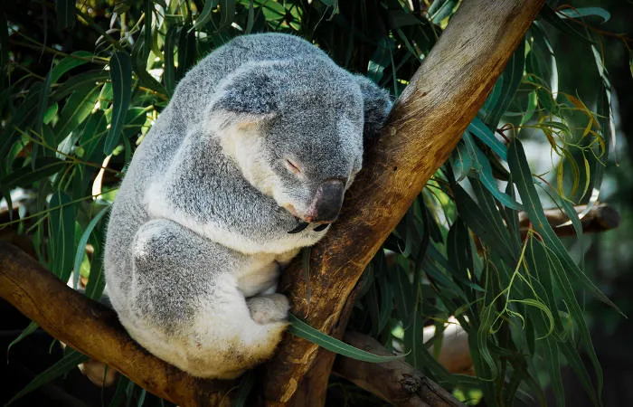

Os coalas não bebem água, eles retiram-na das folhas que ingerem.
Segundo a IUCN, a tendência atual da população de coalas é de declínio.
Os coalas têm um sistema digestivo altamente especializado que permite que eles processem as toxinas presentes nas folhas de eucalipto.
Os coalas passam a maior parte do tempo em cima das árvores e dormem cerca de 18 horas por dia.

Figura 9: Coala dormindo.
Embora tenham a aparência de um ursinho de pelúcia e muitos chamam-lhes de ursos, os coalas não são ursos. Estes pertencem à ordem Carnivora e à família Ursidae, diferentes dos coalas.
Os coalas alimentam-se de grande quantidade de folhas, cerca de dois quilos e meio por dia.
Há relatos de coalas que viveram até os 18 anos na natureza.